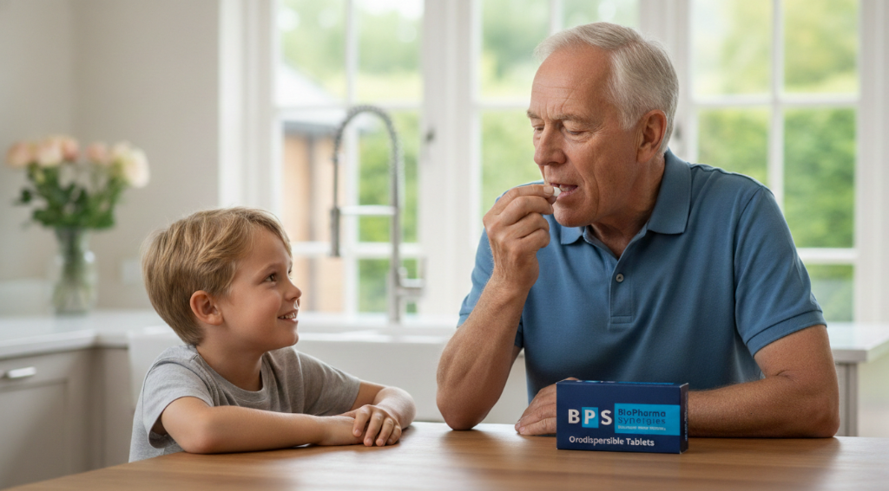

Patient-Centric Formulation Development for Real-World Adherence
Bridging molecular efficacy and patient acceptability. We engineer palatable, waterless oral dosage forms tailored to pediatric, geriatric, and dysphagia populations.
Partner on Patient-Centric Products
Solving the Sensory & Swallowing Barriers
Up to 50% of chronic patients and a high proportion of pediatric patients fail to complete prescribed regimens due to bitter taste rejection or difficulty swallowing monolithic tablets.

Pediatric Formulation Acceptability (PIP Ready)
Children exhibit heightened sensitivity to bitter tastes (TAS2R receptors). Our palatable Stick Packs and ODTs eliminate the refrigeration, preservatives, and dosing errors of liquid syrups while meeting EMA/FDA pediatric acceptability standards.
Geriatric & Dysphagia Safety
For elderly, neurological, or polymedicated patients with compromised swallowing reflexes, fine orodispersible powders (<200 µm) dissolve effortlessly in saliva without water, mitigating choking risks.
On-the-Go Acute & Rescue Therapies
Discrete, waterless administration enables immediate dosing at the onset of symptoms—essential for antimigraine triptans, antihistamines, and acute analgesics.
Regulatory Rigor Across Dosage Formats
Aligned with FDA and EMA biopharmaceutical considerations, we match each API to the appropriate oral delivery mechanism without extrapolating claims across formats.
Orodispersible Powders (Stick Packs) & ODTs
Designed for rapid salivary dispersion (<15–30 s) and swallowability without water. By avoiding occlusive polymer coatings, our formulations preserve the API's intrinsic gastrointestinal dissolution and bioequivalence profile.
Chewable Tablets
Engineered for high-dose APIs requiring mechanical breakdown prior to swallowing, providing sustained receptor-level taste masking throughout mastication and up to 5 minutes post-ingestion.
Pre-Solubilized Mucosal Matrices
For specific low-molecular-weight, lipophilic BCS Class II APIs where transmucosal absorption is clinically targeted, pre-solubilized complexes can be tailored to support buccal or sublingual delivery.